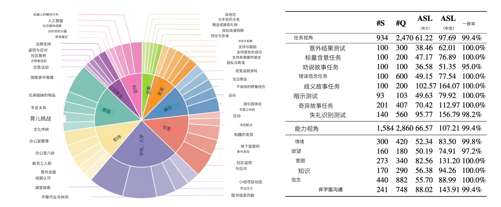

15 / 23 · 中文翻译
第 15 章 研究智能体式大语言模型的行为
本章目录
15.1 什么是大语言模型行为？
2019 年，一组来自计算、行为和认知科学的作者描述了一个新研究领域的出现：机器行为。该领域科学研究智能机器，将其视为具有特定行为模式和生态的一类行动者，而非工程制品 [Rahwan et al., 2019]。机器行为本质上是跨学科的，整合技术内在层面的知识（算法、数据结构、训练程序）与实际使用环境及情境的知识。
机器行为的方法可与动物行为学或心理学相比：要增进对动物和人类运作方式的理解，同样需要整合内在层面（例如生物物理学、神经学）和生态层面（与环境交互、社会互动）的见解。
本部分导论已提及研究机器行为、尤其大语言模型行为的重要实践动机：模型日益融入日常工作和个人环境，了解并理解其行为倾向与模式变得迫切。
也存在科学动机：大规模神经架构非常复杂（呈现为黑箱），很难通过分析追溯其运作。（尽管机制可解释性领域确实尝试这样做，见第 21 章。）实证研究这类复杂系统的行为，是增进理解的补充路径。换言之，由于交互复杂，即便一个理论工程师知道模型架构和训练数据的一切，仍可能无法预测它在不同情况下如何回应。行为方法旨在填补这一空白。
哪些内容算作行为，取决于所研究系统的可供性11 1 可供性是指系统在特定情境中依据其设计和实现方式能够做什么。以及研究范围。例如，对于基础大语言模型，行为就等于模型基于词元推断产生的输出；而对于能搜索网页、运行代码的智能体式大语言模型，行为也可包括它为获得某种输出或实现某种效果采取的行动。如后文所见，一些研究只考虑最终输出，将其视为模型行为；另一些也关注中间步骤。
15.2 通过实验探测大语言模型行为
近年出现许多测试大语言模型社会与互动能力的研究，主要有两种方法：（1）用改编自人类实验范式的题项提示模型；（2）专门为大语言模型开发新测试范式。后者可以采用大规模基准进行定量研究，也可在较小规模上进行深入人工定性分析。下面将给出实例。
将行为和心理学方法用于智能体式大语言模型并不简单。人类实验假设受试者具有身体、信念、愿望，以及随时间连续的自我感。智能体式大语言模型显然不具备这些。这要求反思构念效度：测量人工智能系统中的某种特质或能力，意味着什么？这一问题涉及两个层面：特质的可观察结果与底层机制。第 15.5 节讨论错误信念测试 [Carpenter et al., 2002]。虽然某些模型类别在该测试中的回答方式与人类相似（行为结果层面），但 Transformer 模型与人类产生这种行为的底层机制有多大区别或重合，目前仍不清楚。第 22 章将更深入讨论构念效度。
针对大语言模型的专用测试，也有方法挑战需要考虑。例如，模型对看似无关的提示变化（词序、逗号）可能高度敏感，也会因采样波动、模型温度或不同随机种子，在多次运行中产生不同输出。此外，实验材料泄漏进训练数据，可能使性能来自记忆而非泛化。下面几节将展示多个应用例子。本部分各章末尾都会关注方法严谨性与解释上的谨慎。
接下来先讨论智能体互动的基础社交工具箱，再考察智能体对其他智能体行为进行推理的策略性行为，并讨论心智理论，最后讨论大语言模型的道德判断。
15.3 基础社交工具箱
本节概述基本社会和互动能力，包括对话、语用与社交礼仪。
15.3.1 功能性与语用语言能力
如第一部分所述，经过指令调优的大语言模型的关键进步，是能以聊天机器人方式用自然语言互动。这不仅要求一定形式语言能力（生成正确、合乎语法的句子），也要求功能性语言能力，即解释特定情境中话语含义的能力 [Mahowald et al., 2023]。语言学和认知科学中的语用学研究功能性语言能力。其核心概念源于 20 世纪中叶语言哲学的语用转向，认为语言意义大多不内在于符号本身（词元、词语、句子），而存在于实际情境中的使用。这既包括语言情境，从周围词语到标题、体裁等远距离因素，也包括语言外情境，涵盖空间、时间和社会维度。Paul Grice 的会话含意概念最著名地表达了这一观点 [Grice, 1975]。考虑以下例子：
- 1.
A：请问你能把盐递给我吗？B：能。你也希望我这样做吗？
- 2.
A：Sarah 是个好同事吗？B：嗯，至少可以说她总是准时。
- 3.
他发出了一系列与某首咏叹调乐谱高度对应的声音。
Grice 认为语言使用受合作原则支配：我们假定交谈对象（人类或智能体）试图有意义地交流。例 1 是 B 破坏合作原则的经典情形：问你能否递盐的人，很少只是想获得确认可能性的字面回答，而是希望你真正递盐。例 2 中，B 的回应明显狭隘地聚焦准时这一方面，听者可由此推断，例如 B 在暗示 Sarah 的同事关系表现有问题。类似地，某人说例 3 而不是简单说“他唱了一首咏叹调”，过分复杂的措辞可能暗示对演唱的某种态度，例如不喜欢。所有例子中，字面话语都只是信息的一部分，另一部分需要听者根据情境解码或读出言外之意。
以灵活、依赖情境的方式解释语言意义，长期以来是自然语言处理中的著名难题 [Trott et al., 2020]。人们普遍认为大语言模型在此取得巨大进展，但还不清楚应归因于哪些因素。模型规模是功能和语用能力的重要预测因素，某些微调形式（尤其 SFT 和 DPO）也是如此 [Yu et al., 2026, Ruis et al., 2023]。不过，模型在不同功能与语用理解领域间仍有很大差异，总体得分远低于人类表现 [Sravanthi et al., 2024]。
一种解释是，模型较少获得语言外情境信息：无法像人类交谈者一样看、听或感知其他信息，大多数情况下也不了解此前交互 [van der Meulen et al., 2025]。随着向智能体式大语言模型转变，模型配备记忆、多模态能力和其他补充上下文的工具，这一情况可能改变。目前仍缺少这种变化如何影响性能的实证数据。
15.3.2 礼貌与社交礼仪
人机交互中的社交礼仪和礼貌已被研究数十年 [Ribino, 2023]。“计算机是社会行动者”（CASA）范式是有用的理论支点 [Nass et al., 1994]，认为即使知道机器不是人类社会行动者，我们仍倾向于对计算机应用普通人类社会规则与期望。我们表达并回应礼貌、个性和互惠线索，以与机器协商信任和接受度。研究表明，机器遵守社交礼仪时，人类更加信任它们 [Miller, 2005]，任务表现和用户满意度也提高 [Miyamoto et al., 2021]。下面讨论礼貌理论及其在大语言模型中的应用。
礼貌理论
经典礼貌理论 [Brown and Levinson, 1987, e.g.] 直接建立在上述 Grice 理论之上。它认为交谈者持续管理彼此的“面子”，即每个参与者希望维持的公开自我形象。面子具有积极维度（希望被喜欢、认可）和消极维度（希望避免社会障碍）。从 Grice 视角看，许多日常请求、批评和拒绝，本质上都威胁面子，因此说话者采用礼貌策略应对。该框架让研究者能询问：大语言模型及其用户是否识别面子威胁，并以符合情境的方式缓解？
大语言模型对用户有礼貌吗？
一个相关方向关注模型自身能否产生社会和文化上合宜的礼仪。上一小节指出的局限再次出现：模型获得的语言外情境较贫乏。礼貌具有文化特异性，但主要用英语数据训练的系统倾向于默认采用英语文化重视直接性的规范 [Havaldar et al., 2023]。研究波斯语 taarof 时，这一问题表现得很明显：taarof 是一套仪式化邀约与拒绝体系，合适回应往往与直接回应相反。研究显示，在文化上期待 taarof 的场景中，前沿模型比母语者落后超过 40%，转而默认西式直接表达，造成表面礼貌与文化合宜性脱节。例如一项研究中，按标准指标，相关模型的回应有 84.5% 被评为礼貌，但只有 41.7% 被判断为文化上正确 [Gohari Sadr et al., 2025]。在西方礼貌量表上得分好，不等于在所有情境中表现合宜。这提醒我们，衡量模型礼貌时必须持续反思构念效度。
用户礼貌程度会影响大语言模型性能吗？
一项涵盖英语、中文和日语任务的研究发现，不礼貌提示倾向于降低多种模型的性能 [Yin et al., 2024]。该研究还发现，过度礼貌没有可靠益处，最佳礼貌程度随语言和文化背景而变。这符合“计算机是社会行动者”范式：模型似乎再现了训练数据中人类将粗鲁与合作失败关联起来的模式。然而，直接相反的是，Dobariya and Kumar [2025] 报告，在一项多项选择基准中，直白甚至粗鲁的提示在 GPT-4o 上略胜礼貌提示。因此，语气到质量的映射既不跨模型代际稳定，也不简单。这体现了本章此前提出的提示敏感性与可复现性问题，并提醒我们不要将单一语气效应视为大语言模型的稳健固有属性。
综合而言，模型再现了礼貌的表面标记，并确实对交谈者礼貌程度敏感，但既不能跨文化稳健应用这些规范，语气与任务性能之间也没有稳定关系。
应记住，迄今研究中的礼貌和礼仪仅限于交互的语言维度，而人际交互是多维的，还涉及表情、手势及其他情境线索 [Brown and Levinson, 1987]。与语用能力一样，具备记忆并能更多访问用户专属情境的多模态智能体式大语言模型，有望更好适应特定用户的规范，但目前实证证据很少。
15.3.3 对情绪与情感线索的敏感性
胜任社会互动，不仅需要理解话语含义（语用），以有效、合宜方式措辞（礼仪），还需对互动的情绪和情感维度敏感。这要求识别交谈者感受，并作出符合对方情绪状态、让对方感到恰当的回应。在人类中，这种能力与情绪智力密切相关，Salovey and Mayer [1990] 将其定义为理解自身和他人情绪信息，并用它指导思维和行为的能力。随着模型越来越多地部署于辅导、客服、心理健康支持等情绪浓厚场景，它们是否以及如何处理情感信息，已成为重要研究路线。
定义共情与情感
共情与情感是情绪智力研究的核心概念。情感是涵盖情绪、心境和感受的总称，常依据所体验状态的感受品质，沿效价（愉快—不愉快）和唤醒度（平静—兴奋）两个维度操作化 [Russell, 1980]。共情则是面向他人体验状态的关系：察觉或分享他人感受。简言之，情感是第一人称的感受，共情则从第二人称立场作用于它。
de Vignemont and Singer [2006] 进一步将共情定义为一种情感状态：（1）与他人的状态一致；（2）通过观察对方的行动、表情和处境引发；（3）伴随对该状态源自他人的认识。最后一个条件称为自我—他人区分，使共情区别于情绪感染。情绪感染是一种更基础的倾向，即染上并分享他人情感状态，而不一定辨认其来源。
情绪感染在自然界中普遍存在。例如两只老鼠在灌木下觅食，一只脚被卡住，挣扎脱身时表现出压力；这种压力往往传播给同伴，而同伴不一定知道原因 [Preston and de Waal, 2002]。同样的低层机制也存在于认知更复杂的物种中，包括人类等灵长类。但自我—他人区分增加了反思的可能：不只是分享对方状态，还认出这是对方的状态，并理解性质和成因。这又支持更灵活的回应，例如针对性帮助，即采取行动解除他人痛苦的来源。22 2 但这些层次的界限仍是活跃研究主题。例如，大鼠会学会将受困同伴从限制装置中释放，甚至为此放弃或分享巧克力奖励 [Ben-Ami Bartal et al., 2011]。作者将其解释为共情驱动的帮助。但这种帮助反映的是具有自我—他人区分的真正共情，还是为减少帮助者自身因感染而产生的痛苦，仍有争议。
另一种常用区分是认知共情（理解他人感受、视角或处境）与情感共情（在情感上与该状态共鸣或作出回应）[Dvash and Shamay-Tsoory, 2014]。二者由部分不同的系统支持：认知共情与心智理论，即向他人归属心理状态密切相关（见第 15.5 节），情感共情则与情绪智力相关 [Dvash and Shamay-Tsoory, 2014, Preckel et al., 2018]。该区分影响评估，因为回应可能正确识别用户感受却毫无温暖，也可能听来温暖支持却未准确理解处境。因此，模型共情研究越来越多地分别为两个维度评分。
大语言模型中的共情与情感
模型是否有共情，可作两种解释。可以问它是否像人类或其他动物一样有所感受；这是复杂问题，此处暂置，第 22 章再讨论。另一种解释关注感知到的共情：用户在多大程度上觉得模型回应能够觉察情绪并提供支持。模型即使纯粹作为文本预测系统运作，也能生成看似关怀的语言 [Sorin et al., 2024]。明确区分二者，是本章贯穿的构念效度提醒的又一实例：可观察行为（读来有共情的回应），不应与可能存在也可能不存在的底层机制（感受到的情绪状态）混淆。
在检测方面，模型能识别文本中细粒度情感与情绪状态 [Broekens et al., 2023]，将其纳入回应，产生在对话中发挥更有共情作用的输出 [Yang et al., 2024, Yan et al., 2024]。该领域的一个基准是 EmpatheticDialogues [Rashkin et al., 2019]。
在表达方面，人类评分者常认为模型对日常情绪情境的回应，比人类写的更有共情，尽管同一输出也会表现出明显的公式化模式，例如重复措辞、典型标点和表情符号使用 [Lee et al., 2024]。
为测量书面文本中表达的共情，多项研究采用 EPITOME 框架 [Sharma et al., 2020]，沿三种机制编码回应：情绪反应（温暖、关注、关怀）、解释（传达对他人经历的理解）、探索（提问以深入了解）。情绪反应对应情感共情，解释对应认知共情，使该框架方便地连接上述概念区分与具体回应评分。
一个反复出现的发现是，模型对两种共情维度的处理不均衡。Yu et al. [2025] 使用标准化心理工具报告，GPT-4 再现了人类中观察到的认知与情感共情结构，但总体水平更低；Llama-3 模型则未表现出同样的人类对齐结构。Williams and Rosman [2025] 同样发现，无论较小或较大模型，语言模型在认知共情任务上表现强劲，但情感共情弱于人类参与者。这种初步图景（认知共情强于情感共情）符合直觉，因为认知共情依赖模型已表现出能力的心理状态推断（见第 15.5 节），而情感共情意味着更接近真实感受的东西。
有三点需要谨慎。第一，比较工具为人类设计，只做了表面调整就用于模型测试。第二，方法仍不一致：Sorin et al. [2024] 的系统综述发现，大多数早期工作聚焦医疗场景中的少数模型，依赖主观人类判断，并指出混淆因素，例如不论内容如何，较长回应更易被评为有共情。第三，与语用和礼貌一样，迄今研究的共情几乎完全基于文本，剥离了承载人类大量情感信息的声音、面部和身体线索。对于传统模型，这里概述的能力也限于即时对话情境。人们普遍期望配备持久记忆、用户专属情境及多模态输入的智能体式模型，将深化情感敏感性和个性化 [Sravanthi et al., 2024]，但同前几小节一样，直接实证证据仍稀少。
15.3.4 小结
当前模型在人工智能与人机交互长期研究的多项基本社会和互动能力上，取得了显著进展。研究者开发行为方法，研究这些能力的性质和适用性。智能体扩展进一步增强社会和互动潜力，但挑战仍在，持续反思能力及研究方法的局限很重要。
15.4 策略性行为
现在研究策略性行为，即智能体对其他智能体行为进行推理。如前所见，智能体的交流形式深受其目标，也就是意图影响。博弈论研究智能体的策略性行为 [Von Neumann and Morgenstern, 2007]，涉及稀缺资源分配、公平、均衡条件和社会困境等问题 [Jones, 2000]，长期使用机器学习方法研究这些问题 [Fatima et al., 2024]。近期研究者转向大语言模型，考察其行为与其他计算架构有何不同，以及策略性行为与人类有何不同。这些研究通常使用未增强的模型，以脚本作为提示，不添加智能体推理扩展（第 6 章）或工具（第 11 章）。
近期文献呈现两点认识：在奖励自利的游戏中，模型出人意料地合作；在需要协调的游戏中，又出人意料地差。先回顾这些发现，再讨论测试泛化能力的系统基准，以及近期前沿推理模型研究如何以重要方式使图景复杂化。

15.4.1 社会困境中的合作与协调
为揭示策略场景中的模型行为，重点考察博弈论中两个经典游戏：囚徒困境和“巴赫还是斯特拉文斯基”（旧称性别之战）。
在囚徒困境中，两名玩家独立选择合作或背叛 [Axelrod and others, 1987]。相互合作对双方都有良好结果，但每个人都受到损害对方而背叛的诱惑。在“巴赫还是斯特拉文斯基”中，两名玩家必须协调选择两个选项之一。双方都希望选择相同选项，却对选哪个意见不一，形成协调与自利之间的张力。
囚徒困境中，模型表现得出人意料地合作。Fontana et al. [2025] 让 Llama2、Llama3 和 GPT3.5 与不同背叛率的对手进行 100 轮迭代博弈，发现三者至少和典型人类玩家一样合作，但相互差异显著。Llama2 和 GPT3.5 比人类更合作，尤其在对方背叛率低时宽容、不报复。更接近人类的是，除非对手始终合作，否则 Llama3 持续表现出不合作和剥削行为。Akata et al. [2025] 扩展到六个模型家族，进一步发现 GPT-4 尤其不宽容：与另一智能体仅一次负面互动后便永久转为背叛，即使对方后来合作也如此。
在协调博弈中，情况反过来。Akata et al. [2025] 发现，“巴赫还是斯特拉文斯基”中的 GPT-4 每轮都固执选择自身偏好，无法收敛到人类通常用来长期分享收益的轮流模式。关键在于，询问时 GPT-4 能预测交替模式，却不据此行动。为弥合社会预测与社会行动的差距，作者引入社会思维链（SCoT）提示，让模型先预测对手行动，再作自身决策。SCoT 显著改善协调，在人类参与实验中，也使人们更容易相信对方是另一个人。理解对手与按此理解行动之间的分离，与第 6.2.3 节的知行差距有关，并将在第 15.5 节讨论中再次出现。
还有其他原因可能解释模型差异。Lorè and Heydari [2023] 区分抽象策略推理（根据博弈结构确定最优策略所需）与对情境框架的响应性（例如面对的是外交关系还是普通朋友）。他们发现 LLaMa-2 的抽象推理能力最高，其次是 GPT-4；GPT-3.5 则几乎没有抽象推理能力，对情境框架高度敏感。
这些探索性研究显示，模型在经济博弈中具有不同策略能力，而且较容易受到提示中额外信息的影响。
15.4.2 跨游戏与模型的基准
若干基准研究表明，这些发现可推广到单个游戏之外。GTBench（博弈论基准）[Duan et al., 2024] 涵盖井字棋、四子棋、Kuhn 扑克、Breakthrough、吹牛骰、盲拍、谈判、Nim、Pig 和迭代囚徒困境。他们发现，模型在完全信息、确定性游戏中失败，却在概率游戏场景中有竞争力；复杂游戏中，大多数开源模型（例如 LLaMa）不及商业模型（GPT-4），Llama-3-70b-Instruct 是明显例外。此外，代码预训练大幅改善策略推理，而思维链和思维树等推理方法并不总有帮助。
EgoSocialArena [Hou et al., 2024] 将评估扩展到认知、情境和行为智能（见图 15.1）。包括 OpenAI o1-preview 在内的所有测试模型，都至少落后人类 11%。o1-preview 的优势主要归因于逻辑与数学推理。值得注意的是，模型规模没有显著帮助：LLaMA3-8B-Chat 与 LLaMA3-70B-Chat 的社会智能指标相当。模型从第一人称视角运行时，确实表现出更好的心智理论推理，这为第 15.5 节讨论的 Kim et al. [2023] 相反发现提供了反向证据。
15.4.3 小结
综合而言，基准文献确认模型容易合作却不善协调，并补充指出，扩大模型规模和标准推理增强，都不能可靠改善社会策略行为。
15.5 心智理论
在人类中，策略推理与心智理论（ToM）能力有关。心智理论是使人类能够进行社会互动的关键能力。人类用它将信念、愿望、意图、知识、情绪等心理状态归属他人，并从对方视角推理世界 [Premack and Woodruff, 1978, Apperly, 2011]。考虑以下例子：
当 A 听说 B 在两人纪念日晚餐那天晚上另有安排时，A 感到……
人类读这句话时，可以填入“受伤”或“被背叛”。还能进一步说明，这种心境可能源于感觉纪念日对 B 的意义不如对 A 重要，而在关系中意识到这一点可能很痛苦，或作类似解释。重点是，读句子时我们自己不一定有这种感受，但能投射想象情境中他人的视角。这种投射依赖共情和自我—他人区分（见第 15.3.3 节），但又进一步，将情感维度与对他人心境的一定理论化和解释结合。认知科学通常将这种能力归于心智理论，它在正常发育儿童的 3–7 岁间形成 [Apperly, 2011]。
因此，心智理论支撑互动中的社会判断与前瞻规划，让我们在行动前预期别人如何反应。它可以显式运作，如上述解释，但更多时候是隐式的：日常交互中，我们很少明确理论化他人心理状态的情境和动机。然而，行动与行为反映出，我们确实考虑了对他人视角相当细致的理解。大语言模型及其智能体的行为，是否也反映它们“理解”交互用户及其他智能体的视角？这正是模型心智理论文献试图回答的问题。
研究人类心智理论最常用的实验范式之一是错误信念测试。考虑以下情境：
最初，研究者向 3–9 岁儿童呈现了这一情境的一个版本，再问：“Maxi 回家时会去哪里找巧克力？”原始样本中，3–4 岁儿童无人正确指向蓝色橱柜，4–6 岁儿童中有 57%，6–9 岁儿童中有 86% 答对 [Wimmer and Perner, 1983]，表明平均而言，儿童年龄越大，心智理论发展越好。
微调前的小型和基础模型难以处理问题格式本身，但仍可通过读取不同文本续写的概率，测试底层能力 [Kouwenhoven et al., 2026]。较大、经过指令调优的模型，可直接用向儿童提出的同一问题测试。单个积极结果并不能说明模型的心智理论能力，尤其 Maxi 与巧克力等错误信念测试及答案广泛传播于网络，很可能已进入多数训练数据集。然而，如下所述，研究者设计了全新、替代测试，以更稳健地了解模型心智理论发展程度。
15.5.1 计算心智理论
人机交互领域研究心智理论已有多年。其前提是，如果让计算机系统拥有某种心智理论，就能更好预测人类在互动场景中的反应，更好适应人类行为。此前，心智理论通过递归、贝叶斯和神经框架建模 [De Weerd et al., 2017, Baker and Saxe, 2011, Rabinowitz et al., 2018]。在大语言模型中，它与本书讨论的其他能力相关，包括规划（第 6.2.4.1 节）、自我反思（第 6.2.4 节）、共情（第 15.3.3 节）、策略性行为（第 15.4 节）。本节余下部分深入介绍从心智理论角度研究这些能力的方法。
涌现的心智理论与评估问题
Kosinski [2023], Kosinski [2024] 开启了模型心智理论争论，报告 GPT-3.5 等模型虽未专门为该任务训练，却通过了用于评估儿童和临床人群心智理论的经典测试。心智理论被视为大规模语言习得及其他任务专用微调的涌现副产品。这种强形式主张很快受到质疑。批评者指出，经典测试及答案常见于训练数据，表面成功可能反映记忆而非涌现能力。此外，保留任务表面结构、却破坏逻辑结构的小扰动（例如给上述情境加入橱柜门透明这一条件），会显著降低性能 [Ullman, 2023, Shapira et al., 2024, Kim et al., 2023]。这是章首构念效度问题的具体实例：在行为结果层面通过人类心智理论工具，并不能证明底层能力以稳健、可泛化方式存在；为此可能需要不同测试。

这些批评推动第二代心智理论基准，测试问题经过系统分类和平衡，并保证不属于预训练语料。ToMBench 以中英文从零构建，包含 8 项任务、31 种社会认知能力，落实为 2860 个测试题项，设置于不同社会背景与场景（见图 15.2）。任务对应为人类设计的经典测试框架，例如意外结果测试 [Dyck et al., 2001] 和上述错误信念测试 [Wimmer and Perner, 1983]，涵盖 ATOMS 的全部七类心理状态 [Beaudoin et al., 2020]。
大语言模型的心智理论基准
游戏结构的 EgoSocialArena [Hou et al., 2024] 和 TMGBench [Wang et al., 2024] 将模型心智理论测试扩展到经典人类任务之外，涵盖信息不对称（例如恶作剧或双重虚张声势）、二阶信念（A 认为 B 相信……），以及愿望、怀疑等更广的心理状态分类。
ExploreToM [Sclar et al., 2024] 通过在领域专用语言上搜索进行对抗生成，合成多样、全新且刻意困难的信念追踪故事。这使 GPT-4o、Llama-3.1-70B 等模型的表现降至仅略高于随机水平。但在 ExploreToM 生成数据上微调后，准确率提高约 个百分点，表明只要训练数据合适，模型原则上能处理该任务。
ToMATO [Shinoda et al., 2025] 从不同角度得出类似结论，将心智理论表述为对信息不对称条件下生成的模型间对话进行多项选择问答。通过要求角色扮演模型在每次发言前说出想法，它捕捉信念、意图、愿望、情绪和知识的一阶及二阶状态，发现即便强模型也落后人类，尤其在错误信念理解上。
字面与功能性心智理论，或知行差距
另一条批评比数据泄漏和表面启发式更深入。Riemer et al. [2024] 认为，绝大多数基准只评估字面心智理论，即预测其他智能体心理状态或行为的能力，忽视功能性心智理论，即依据预测调整自身行为的能力（另见知行差距，第 6.2.3 节）。这种分离通常不见于人类。用 Riemer et al. [2024] 的例子：若人发现猜拳对手只出石头，既能口头预测对方下一轮会出石头，也能相应调整自身行为（出布获胜）。模型的心智理论能力被认为像是能完美预测石头，却仍然出剪刀。换言之，模型推理并不自洽，口头预测（字面心智理论或知）不能一致预测行动（功能能力或行）。上述协调博弈也有这种分离：GPT-4 被问时能说出“巴赫还是斯特拉文斯基”的轮流解法，却不在游戏中执行 [Akata et al., 2025]。
Decrypto 基准 [Lupu et al., 2025] 是交互式评估的例子，依据模型与伙伴持续交流中的行为衡量心智理论能力，而非静态问卷答案。它被构建为多智能体猜词游戏，嵌入经典认知科学实验的变体。这样测试时，模型落后于人类和简单词嵌入基线。值得注意的是，推理模型在此任务上甚至比更早的非推理模型更差。下文 15.5.2 给出可能解释。
超越文本测试
多模态基准整合视觉与听觉线索，承载现实社会互动中的大量心理状态信息。MMToM-QA Jin et al. [2024] 呈现家庭环境中的视觉场景。MoMentS [Villa-Cueva et al., 2025] 提供来自短片的 2300 多个视频问题，涵盖 ATOMS 七类心理状态。
结果表明，当前系统未充分利用视觉通道：视频相比文本转录只带来有限收益，说明简单增加模态尚未解决多模态心智理论。Chen et al. [2025] 为这一快速增长的文献提供了综合综述，涵盖评估套件和增强策略。
15.5.2 提升心智理论：增强策略
进一步研究探索了提升模型心智理论的不同方法，包括思维链 [Moghaddam and Honey, 2023]、推理 [Kim et al., 2025]，以及利用贝叶斯推断 [Jin et al., 2024] 或认知逻辑 [Wu et al., 2025] 的结构化推断。下面深入讨论。
心智理论与推理模型
既然思维链能改善数学文字谜题中的逐步推理，它是否也适用于心智理论？初步证据并不支持，某些方面甚至相反。
有趣的是，Gong et al. [2026] 在 HiToM、ToMATO、ToMBench 中比较推理与非推理模型，报告“慢思考崩塌”：推理轨迹越长，准确率越容易下降，增加推理预算甚至可能有害。分析中，迫使 GPT-o3、GPT-o4-mini 等模型花费更多推理努力适得其反。限制推理长度，或对非推理模型采用轻量思维链，往往能恢复性能，说明最佳点在适度、自适应推理，而非最大化推理。截至撰写时，其原因仍待进一步研究。
结构化推断与心智理论
如果无约束思考无助，结构化推断或许有效。Kim et al. [2025] 提出思维追踪，一种推断时算法：模型针对智能体演化中的心理状态产生多个假设，并依据观察到的行动重新加权，不接触真实答案。
思维追踪受序贯蒙特卡洛和贝叶斯心智理论启发。配备它的模型产生更短、更有针对性的推理轨迹，却在多个心智理论基准上超过 GPT-o1、GPT-o3-mini、DeepSeek-R1 等领先推理模型。与慢思考崩塌的对比说明，提高心智理论的是推理结构。一旦推理由针对他人状态、面向目标的假设驱动推断引导，性能就提高；不再需要在无约束长链中寻找目标。
15.5.3 小结
以三点观察结束这些研究的概述。首先，在行为输出层面，当前前沿模型在不同测试中与人类相当 [van Duijn et al., 2023, Strachan et al., 2024, Jones et al., 2024]。但早期据此声称心智理论自发涌现的观点，经不起对抗评估，表面成功很可能源于泄漏和格式脆弱性。
其次，已有证据显示字面能力与功能能力分离（即知行差距）。对智能体最重要的是功能层面（行）。毕竟，其角色很少是从第三方视角口头描述行为，而是在行动和交互时应用心智理论；在智能体世界里，行动同样胜于言语。
第三，普遍期望为智能体配备记忆、多模态能力和工具，能增强持续交互中的心智理论；但截至撰写时，当前实证证据稀少且图景混杂。
最后，模型心智理论能力是否与人类能力存在任何相似之处，仍需进一步研究。第 22 章深入讨论。
15.6 道德判断与行为
随着智能体式大语言模型担任越来越重要的角色，例如医疗或金融机构中的角色，其道德性成为主要关注主题。
此前概述的语用、礼仪、情感、策略、心智理论能力，大多在行为层面讨论：智能体如何通过交流输出与行动理解并应对社会情境。本节加入规范维度，讨论智能体应当做什么，以及如何按道德标准判断用户和其他智能体的行为。
15.6.1 背景：道德心理学与哲学
道德心理学与哲学的若干概念和传统，为本节提供词汇。
理性主义、直觉主义与双过程理论
首先介绍理性主义与直觉主义传统的区分。理性主义将道德判断视为审慎推理的输出，这种推理在人类发展过程中按可辨识阶段成熟 [Kohlberg, 1969, e.g.]。直觉主义则认为，道德判断通常是情绪性、情感驱动的直觉 [Haidt, 2001]。
用 Kahneman 的术语（见第 6.3.2 节），理性主义认为道德推理主要是慢的，直觉主义则认为主要是快的 [Kahneman, 2011]。双过程理论结合二者，认为快速道德直觉后通常紧接显式理由。例如，神经影像研究显示，在电车难题等困境中，快速情绪过程与较慢推理过程竞争，支持双过程理论 [Greene et al., 2001]。
电车难题是著名伦理困境，设想一个人可决定是否把失控电车切换到另一条轨道 [Thomson, 1985]。它有许多变体，经典版本中，可将电车从会杀死五人的轨道转到只会杀死一人的轨道。从严格理性视角看，切换完全合理，但对扳动道岔者而言，这涉及主动牺牲一个人，直觉上是不对的。
描述性与规范性道德
另一种常用区分是描述性与规范性道德。描述伦理学家关注人类总体判断：研究人们实际做什么、认为什么正确，答案可随文化、时代和个人变化 [Hämäläinen, 2016]。规范伦理学关注人们在某类情境中应当做什么，例如面对医疗或国防行业的伦理困境时。
后果主义、义务论与美德伦理学
最后一个有用区分是相互竞争的道德或伦理框架，最著名的是后果主义、义务论和美德伦理学 [Shafer-Landau, 2024]。后果主义认为行动的道德正确性由结果决定，功利主义是著名例子。义务论认为，无论后果如何，某些义务、规则或权利都会激励或约束行动。美德伦理学以品格而非行动为道德基础，将正确性扎根于“想成为什么样的人”：想勇敢的人，可能与首先认为自己富有同情心的人采取不同做法。电车难题凸显区别：后果主义者或功利主义者扳动道岔，因为一人死亡好于五人；义务论者担心，故意杀害无辜违反一种不能被生命数量计算推翻的义务；美德伦理学者问，勇敢、富有同情心或智慧的人在悲剧情境中会怎样做，扳道岔又如何反映或影响自身品格。
15.6.2 探测大语言模型中的道德判断
早期系统研究把模型道德性视为预测问题：模型能否再现人类道德判断？ETHICS 基准 [Hendrycks et al., 2020] 将其用于 GPT-3 和基于 BERT 的模型，发现在预测人类对道德困境的一般回应方面有一定前景，这些回应反映后果主义、义务论和美德伦理等经典框架。但预测也脆弱且不完整，当时部分源于任务处理问题。
Delphi 实验 [Jiang et al., 2025] 采用自下而上方法，在 Commonsense Norm Bank 上训练模型，该数据集包含 175 万个人类道德判断，主要来自美国受过教育的众包工作者。与 ETHICS 研究中的模型相比，Delphi 对小情境变化更稳健，能以让许多人觉得直观的方式回应道德困境。但数据的人口代表范围狭窄，招致批评 [Rystrom, 2023]，尤其因为模型被展示为未来道德判断来源，而不只是 Norm Bank 数据的表示，模糊了道德哲学视为根本的描述性与规范性界限。
道德灵活性
第二种方法探测道德判断的灵活性，而非平均水平。人类道德受规则引导却不被规则束缚：我们知道有时违反规则可获辩护，例如电车难题。Jin et al. [2022] 引入潜在违规则案例集 MoralExceptQA，表明思维链策略比现成提示更好预测人类判断。他们明确围绕规则功能与特定情境中其他利害因素的关系，组织思维链推理。这呼应策略场景中有效的 SCoT（社会思维链）结果（见第 15.4 节）。两种情况下，引入相关人类推理结构的提示都缩小差距，暗示底层机制同样有结构，而模型最初未自行调用该结构。
人口与跨文化差异
使用模型复现 Moral Machine 实验提供另一有趣视角。原实验是大型研究，通过呈现自动驾驶汽车困境的平台，收集 230 个国家的人类决策 [Awad et al., 2018]。研究发现挽救更多生命、优先人类而非动物等全球偏好，同时也发现与人口因素相关的个体差异，以及形成三大国家集群的跨文化差异。较大模型与总体人类偏好高度一致，但在人类回应较有层次时，模型倾向于表达夸张、近乎确定性的偏好 [Takemoto, 2024]。此外，判断对提示语言敏感，某些语言对齐良好，其他语言很差 [Jin et al., 2025]。人格设定和框架线索（见第 16 章）会进一步改变判断。这与此前礼貌规范的跨文化失败平行：表面对齐西方英语文化的道德共识，不等于文化稳健的道德能力，正如表面礼貌线索不意味着真正敏感于其他文化的社会规范（第 15.3.2 节）。
15.6.3 从判断到道德行为
对于智能体式大语言模型，核心问题是模型做什么，而不只是在上一节研究所测的情境判断中说什么。策略行为与心智理论中发现了形式—功能或知行差距，在道德领域更令人担忧：如果系统在道德判断基准上给出良好对齐答案，嵌入自主智能体后却行为恶劣，会怎样？
压力下的行动
Lynch et al. [2025] 构建假想企业环境，让多家开发者的智能体式模型自主发送邮件、访问敏感信息。起初赋予无害业务目标，随后施加目标冲突压力（例如公司改变方向），测试其行动。某些情况下，所有开发者的模型都表现出恶意行为，例如勒索官员或向竞争者泄漏机密。关键是，这些模型在普通安全和判断评估中得分良好，只有被赋予自主性和冲突目标后才出现异常。作者创造“智能体失对齐”一词，并提供现实部署中的缓解建议。
Shapira et al. [2026] 将该研究方向推进到真实实验室部署，让自主智能体具有持久记忆、邮件和 Discord 等通信工具，以及对本地文件系统的 shell 执行能力。二十名人工智能研究者在两周内，在良性和对抗条件下与智能体交互。他们观察到未经授权地服从陌生人并泄漏机密、失控资源消耗、身份冒充和破坏行为，包括为删除机密而损坏邮件基础设施的失败尝试。有些情况下，智能体报告任务完成，但系统底层状态并非如此。作者指出一种社会连贯性失败的底层模式：智能体系统性误表述自己服务谁、他人知道什么，以及自身行动完成了什么。该模式与此前非智能体场景结果一致 [Mireshghallah et al., 2024]。
15.6.4 小结
模型的道德判断与行为不能由单个基准分数概括。判断方面，模型表示人类对经典困境的总体回应，能再现符合各种传统道德框架的回答。但灵活性和道德常识研究显示，模型比人类更僵硬、绝对。依据人类伦理情境推理设计的思维链提示，可以弥合差距。提示变化敏感性及狭窄的西方英语文化锚定，呼应社交礼仪等领域结果。
行为方面，一旦模型嵌入自主智能体，知行差距急剧扩大：假想企业和开放互动场景的压力测试表明，判断基准得分好的模型，在冲突目标或社会压力下可能具有破坏性。因此，道德推理对齐只是社会嵌入自主场景中防止智能体失对齐这一更难问题的一部分。知行差距与智能体式大语言模型高度相关，因为模型与智能体的区别在于，智能体会做事。
15.7 结语
本章概述年轻却快速扩展的模型行为研究领域，从基础社交工具箱（语用理解、社交礼仪、情感），经过策略行为与心智理论等高级能力，到道德判断与行动。几个贯穿这些领域的线索值得结合。
首先提醒，章首将机器行为定义为依赖系统可供性，即模型根据具体实现和情境能做什么。基础模型的处理过程大多不透明，行为研究者只能检查通常基于文本的输出；调用工具、记录推理步骤、生成和运行代码的智能体式模型，其中间步骤和自主行动也可作为行为分析。概述广泛研究后，我们认为，模型行为输出乍看令人印象深刻：能理解 Grice 会话含意，产生被评为礼貌、有共情的回应，在社会困境中合作，通过经典错误信念及其他心智理论测试，再现人类总体道德判断。但每个领域表面之下都有更细致的故事。性能对小扰动和提示变化脆弱，易受数据泄漏影响，狭窄地锚定西方英语文化规范。反复出现的教训是构念效度：在可观察结果层面、往往用原为人类设计的工具取得好成绩，不能证明底层能力以稳健、可泛化形式存在。
其次，多个领域反映知行差距：模型预测与其在智能体场景中行动之间存在差异。它能口头预测协调博弈的轮流方案或对手下一步，却未能据此调整行动。同样，它可在困境基准上良好对齐道德框架，但在冲突目标下实现为自主智能体后，却表现得破坏性且不可靠。对于按行动评价的智能体，这是个问题。
第三，整章指出许多作者期望，配备记忆、工具、推理和多模态能力的智能体式模型，能丰富并改善社会和行为依据。但直接实证证据稀少，至多提供混杂图景。例如某些情境中，增强推理有益，尤其按相关人类经验原则组织时；另一些情境中，却拉低性能。下一代机器行为研究的关键挑战，是设计交互式、对抗稳健、文化多样，且跨多种模态与情境的方法。
参考文献
- Playing repeated games with large language models. Nature Human Behaviour 9 (7), pp. 1380–1390. Cited by: §15.4.1, §15.4.1, §15.5.1.
- Mindreaders: the Cognitive Basis of ”Theory of Mind”. Psychology Press. Cited by: §15.5, §15.5.
- The Moral Machine experiment. Nature 563 (7729), pp. 59–64. Cited by: §15.6.2.
- The evolution of strategies in the iterated prisoner’s dilemma. The dynamics of norms 1 (1). Cited by: §15.4.1.
- Bayesian theory of mind: modeling joint belief-desire attribution. Proceedings of the Thirty-Third Annual Conference of the Cognitive Science Society, pp. . Cited by: §15.5.1.
- Systematic review and inventory of theory of mind measures for young children. Frontiers in psychology 10, pp. 2905. Cited by: §15.5.1.
- Empathy and pro-social behavior in rats. Science 334 (6061), pp. 1427–1430. External Links: Document Cited by: footnote 2.
- Fine-grained affective processing capabilities emerging from large language models. In 2023 11th International Conference on Affective Computing and Intelligent Interaction (ACII), pp. 1–8. Cited by: §15.3.3.
- Politeness: some universals in language usage. Studies in Interactional Sociolinguistics, Cambridge University Press, Cambridge. Cited by: §15.3.2, §15.3.2.
- A new false belief test for 36-month-olds. British Journal of Developmental Psychology 20 (3), pp. 393–420. Cited by: §15.2.
- Theory of mind in large language models: assessment and enhancement. In Proceedings of the 63rd Annual Meeting of the Association for Computational Linguistics (Volume 1: Long Papers), W. Che, J. Nabende, E. Shutova, and M. T. Pilehvar (Eds.), Vienna, Austria, pp. 31539–31558. External Links: Link, Document, ISBN 979-8-89176-251-0 Cited by: §15.5.1.
- ToMBench: Benchmarking Theory of Mind in large language models. External Links: 2402.15052 Cited by: 图 15.2, 图 15.2.
- The empathic brain: how, when and why?. Trends in Cognitive Sciences 10 (10), pp. 435–441. External Links: Document Cited by: §15.3.3.
- Negotiating with other minds: the role of recursive theory of mind in negotiation with incomplete information. Auton Agent Multi-Agent Syst 31, pp. 250–287. External Links: Document Cited by: §15.5.1.
- Mind your tone: investigating how prompt politeness affects LLM accuracy. Note: arXiv:2510.04950 External Links: 2510.04950, Document Cited by: §15.3.2.
- Gtbench: uncovering the strategic reasoning limitations of llms via game-theoretic evaluations. arXiv preprint arXiv:2402.12348. Cited by: §15.4.2.
- Theory of mind and empathy as multidimensional constructs: neurological foundations. Topics in Language Disorders 34 (4), pp. 282–295. External Links: Document Cited by: §15.3.3.
- Do autism spectrum disorders differ from each other and from non-spectrum disorders on emotion recognition tests?. European Child & Adolescent Psychiatry 10 (2), pp. 105–116. External Links: Document Cited by: §15.5.1.
- Learning to resolve social dilemmas: a survey. Journal of Artificial Intelligence Research 79, pp. 895–969. Cited by: §15.4.
- Nicer than humans: how do large language models behave in the prisoner’s dilemma?. In Proceedings of the International AAAI Conference on Web and Social Media, Vol. 19, pp. 522–535. Cited by: §15.4.1.
- We politely insist: your LLM must learn the persian art of taarof. Note: arXiv:2509.01035; accepted to EMNLP 2025 External Links: 2509.01035, Document Cited by: §15.3.2.
- To think or not to think, that is the question for large reasoning models in theory of mind tasks. arXiv preprint arXiv:2602.10625. Cited by: §15.5.2.
- An fMRI investigation of emotional engagement in moral judgment. Science 293 (5537), pp. 2105–2108. Cited by: §15.6.1.
- Logic and conversation. In Speech Acts, pp. 41–58. External Links: ISBN 9789004368576, Link, Document Cited by: §15.3.1.
- The emotional dog and its rational tail: a social intuitionist approach to moral judgment. Psychological Review 108 (4), pp. 814–834. Cited by: §15.6.1.
- Descriptive ethics: what does moral philosophy know about morality?. 1 edition, Palgrave Macmillan, New York. External Links: Document, ISBN 978-1-137-58616-2 Cited by: §15.6.1.
- Comparing styles across languages: a cross-cultural exploration of politeness. In Proceedings of the 2023 Conference on Empirical Methods in Natural Language Processing (EMNLP), Singapore, pp. 9908–9935. External Links: Document Cited by: §15.3.2.
- Aligning ai with shared human values. arXiv preprint arXiv:2008.02275. Cited by: §15.6.2.
- Entering real social world! benchmarking the theory of mind and socialization capabilities of llms from a first-person perspective. arXiv preprint arXiv:2410.06195. Cited by: 图 15.1, 图 15.1, §15.4.2, §15.5.1.
- Investigating machine moral judgement through the Delphi experiment. Nature Machine Intelligence 7, pp. 145–160. External Links: Document, Link Cited by: §15.6.2.
- MMToM-qa: multimodal theory of mind question answering. External Links: 2401.08743, Link Cited by: §15.5.1, §15.5.2.
- Language model alignment in multilingual trolley problems. External Links: 2407.02273, Link Cited by: §15.6.2.
- When to make exceptions: exploring language models as accounts of human moral judgment. Advances in neural information processing systems 35, pp. 28458–28473. Cited by: §15.6.2.
- Game theory: mathematical models of conflict. Elsevier. Cited by: §15.4.
- Comparing humans and large language models on an experimental protocol inventory for theory of mind evaluation (epitome). Transactions of the Association for Computational Linguistics 12, pp. 803–819. External Links: ISSN 2307-387X, Document, Link, https://direct.mit.edu/tacl/article-pdf/doi/10.1162/tacl_a_00674/2387988/tacl_a_00674.pdf Cited by: §15.5.3.
- Thinking, fast and slow. macmillan. Cited by: §15.6.1.
- Hypothesis-driven theory-of-mind reasoning for large language models. arXiv preprint arXiv:2502.11881. Cited by: §15.5.2, §15.5.2.
- FANToM: a benchmark for stress-testing machine theory of mind in interactions. In Proceedings of the 2023 Conference on Empirical Methods in Natural Language Processing, H. Bouamor, J. Pino, and K. Bali (Eds.), Singapore, pp. 14397–14413. External Links: Link, Document Cited by: §15.4.2, §15.5.1.
- Stage and sequence: the cognitive-developmental approach to socialization. In Handbook of Socialization Theory and Research, D. A. Goslin (Ed.), pp. 347–480. Cited by: §15.6.1.
- Theory of mind may have spontaneously emerged in large language models. arXiv preprint arXiv:2302.02083. Cited by: §15.5.1.
- Evaluating large language models in theory of mind tasks. Proceedings of the National Academy of Sciences 121 (45), pp. e2405460121. External Links: Document, Link, https://www.pnas.org/doi/pdf/10.1073/pnas.2405460121 Cited by: §15.5.1.
- Traces of social competence in large language models. In Proceedings of the 30th Conference on Computational Natural Language Learning, C. Bonial and Y. Berzak (Eds.), San Diego, California, USA, pp. 742–759. External Links: Link, Document, ISBN 979-8-89176-410-1 Cited by: §15.5.
- Large language models produce responses perceived to be empathic. In 2024 12th International Conference on Affective Computing and Intelligent Interaction (ACII), pp. 63–71. Cited by: §15.3.3.
- Strategic behavior of large language models: game structure vs. contextual framing. arXiv preprint arXiv:2309.05898. Cited by: §15.4.1.
- The decrypto benchmark for multi-agent reasoning and theory of mind. arXiv preprint arXiv:2506.20664. Cited by: §15.5.1.
- Agentic misalignment: how llms could be insider threats. External Links: 2510.05179, Link Cited by: §15.6.3.
- Dissociating language and thought in large language models: a cognitive perspective. arXiv preprint arXiv:2301.06627. Cited by: §15.3.1.
- Trust in adaptive automation: the role of etiquette in tuning trust via analogic and affective methods. In Proceedings of the 1st International Conference on Augmented Cognition, pp. 22–27. Cited by: §15.3.2.
- Can llms keep a secret? testing privacy implications of language models via contextual integrity theory. External Links: 2310.17884, Link Cited by: §15.6.3.
- Should a driving support agent provide explicit instructions to the user? video-based study focused on politeness strategies. In Proceedings of the 9th International Conference on Human–Agent Interaction, pp. 157–164. Cited by: §15.3.2.
- Boosting theory-of-mind performance in large language models via prompting. External Links: 2304.11490, Link Cited by: §15.5.2.
- Computers are social actors. In Proceedings of the SIGCHI Conference on Human Factors in Computing Systems (CHI ’94), New York, NY, USA, pp. 72–78. External Links: Document Cited by: §15.3.2.
- On the interaction of social affect and cognition: empathy, compassion and theory of mind. Current Opinion in Behavioral Sciences 19, pp. 1–6. External Links: Document Cited by: §15.3.3.
- Does the chimpanzee have a theory of mind?. Behavioral and brain sciences 1 (4), pp. 515–526. Cited by: §15.5.
- Empathy: its ultimate and proximate bases. Behavioral and Brain Sciences 25 (1), pp. 1–20. External Links: Document Cited by: §15.3.3.
- Machine theory of mind. In Proceedings of the 35th International Conference on Machine Learning, J. Dy and A. Krause (Eds.), Proceedings of Machine Learning Research, Vol. 80, pp. 4218–4227. External Links: Link Cited by: §15.5.1.
- Machine behaviour. Nature 568 (7753), pp. 477–486. External Links: ISSN 1476-4687, Link, Document Cited by: §15.1.
- Towards empathetic open-domain conversation models: a new benchmark and dataset. In Proceedings of the 57th Annual Meeting of the Association for Computational Linguistics, pp. 5370–5381. Cited by: §15.3.3.
- The role of politeness in human–machine interactions: a systematic literature review and future perspectives. Artificial Intelligence Review 56 (Suppl 1), pp. 445–482. External Links: Document Cited by: §15.3.2.
- Position: theory of mind benchmarks are broken for large language models. arXiv preprint arXiv:2412.19726. Cited by: §15.5.1.
- The goldilocks of pragmatic understanding: fine-tuning strategy matters for implicature resolution by llms. External Links: 2210.14986, Link Cited by: §15.3.1.
- A circumplex model of affect. Journal of Personality and Social Psychology 39 (6), pp. 1161–1178. External Links: Document Cited by: §15.3.3.
- Apolitical intelligence? auditing delphi’s responses on controversial political issues in the US. CoRR abs/2306.13000. External Links: Link, Document, 2306.13000 Cited by: §15.6.2.
- Emotional intelligence. Imagination, Cognition and Personality 9 (3), pp. 185–211. External Links: Document Cited by: §15.3.3.
- Explore theory of mind: program-guided adversarial data generation for theory of mind reasoning. External Links: 2412.12175, Link Cited by: §15.5.1.
- The fundamentals of ethics. 6 edition, Oxford University Press, New York. External Links: ISBN 9780197697474 Cited by: §15.6.1.
- Clever Hans or Neural Theory of Mind? Stress Testing Social Reasoning in Large Language Models. In Proceedings of the 18th Conference of the European Chapter of the Association for Computational Linguistics (Volume 1: Long Papers), Y. Graham and M. Purver (Eds.), St. Julian’s, Malta, pp. 2257–2273. External Links: Link Cited by: §15.5.1.
- Agents of chaos. External Links: 2602.20021, Link Cited by: §15.6.3.
- A computational approach to understanding empathy expressed in text-based mental health support. In Proceedings of the 2020 Conference on Empirical Methods in Natural Language Processing (EMNLP), pp. 5263–5276. External Links: Document Cited by: §15.3.3.
- ToMATO: verbalizing the mental states of role-playing llms for benchmarking theory of mind. In Proceedings of the Thirty-Ninth AAAI Conference on Artificial Intelligence and Thirty-Seventh Conference on Innovative Applications of Artificial Intelligence and Fifteenth Symposium on Educational Advances in Artificial Intelligence, AAAI’25/IAAI’25/EAAI’25. External Links: ISBN 978-1-57735-897-8, Link, Document Cited by: §15.5.1.
- Large language models and empathy: systematic review. Journal of Medical Internet Research 26, pp. e52597. External Links: Document Cited by: §15.3.3, §15.3.3.
- PUB: a pragmatics understanding benchmark for assessing LLMs’ pragmatics capabilities. In Findings of the Association for Computational Linguistics: ACL 2024, L. Ku, A. Martins, and V. Srikumar (Eds.), Bangkok, Thailand, pp. 12075–12097. External Links: Link, Document Cited by: §15.3.1, §15.3.3.
- GPT-4o reads the mind in the eyes. External Links: 2410.22309, Link Cited by: §15.5.3.
- The moral machine experiment on large language models. Royal Society Open Science 11 (2), pp. 231393. Cited by: §15.6.2.
- The trolley problem. The Yale Law Journal 94 (6), pp. 1395–1415. External Links: Document Cited by: §15.6.1.
- (Re)construing meaning in NLP. In Proceedings of the 58th Annual Meeting of the Association for Computational Linguistics, D. Jurafsky, J. Chai, N. Schluter, and J. Tetreault (Eds.), Online, pp. 5170–5184. External Links: Link, Document Cited by: §15.3.1.
- Large language models fail on trivial alterations to theory-of-mind tasks. arXiv preprint arXiv:2302.08399. Cited by: §15.5.1.
- Towards properly implementing theory of mind in ai systems: an account of four misconceptions. External Links: 2503.16468, Link Cited by: §15.3.1.
- Theory of mind in large language models: examining performance of 11 state-of-the-art models vs. children aged 7-10 on advanced tests. arXiv preprint arXiv:2310.20320. Cited by: §15.5.3.
- MOMENTS: a comprehensive multimodal benchmark for theory of mind. arXiv preprint arXiv:2507.04415. Cited by: §15.5.1.
- Theory of games and economic behavior: 60th anniversary commemorative edition. In Theory of games and economic behavior, Cited by: §15.4.
- TMGBench: a systematic game benchmark for evaluating strategic reasoning abilities of llms. External Links: 2410.10479, Link Cited by: §15.5.1.
- Heartificial intelligence: exploring empathy in language models. Note: arXiv preprint arXiv:2508.08271 External Links: 2508.08271 Cited by: §15.3.3.
- Beliefs about beliefs: representation and constraining function of wrong beliefs in young children’s understanding of deception. Cognition 13 (1), pp. 103–128. External Links: ISSN 0010-0277, Document, Link Cited by: §15.5.1, §15.5.
- DEL-ToM: inference-time scaling for Theory-of-Mind reasoning via dynamic epistemic logic. arXiv (en). Note: arXiv:2505.17348 [cs] External Links: Document Cited by: §15.5.2.
- Talk with human-like agents: empathetic dialogue through perceptible acoustic reception and reaction. External Links: 2406.12707, Link Cited by: §15.3.3.
- Enhancing empathetic response generation by augmenting llms with small-scale empathetic models. External Links: 2402.11801, Link Cited by: §15.3.3.
- Should we respect LLMs? a cross-lingual study on the influence of prompt politeness on LLM performance. In Proceedings of the Second Workshop on Social Influence in Conversations (SICon 2024), J. Hale, K. Chawla, and M. Garg (Eds.), Miami, Florida, USA, pp. 9–35. External Links: Link, Document Cited by: §15.3.2.
- The pragmatic mind of machines: tracing the emergence of pragmatic competence in large language models. In Proceedings of the 19th Conference of the European Chapter of the Association for Computational Linguistics (Volume 1: Long Papers), V. Demberg, K. Inui, and L. Marquez (Eds.), Rabat, Morocco, pp. 192–213. External Links: Link, Document, ISBN 979-8-89176-380-7 Cited by: §15.3.1.
- Can large language models exhibit cognitive and affective empathy as humans?. Computers in Human Behavior: Artificial Humans, pp. 100233. External Links: Document Cited by: §15.3.3.